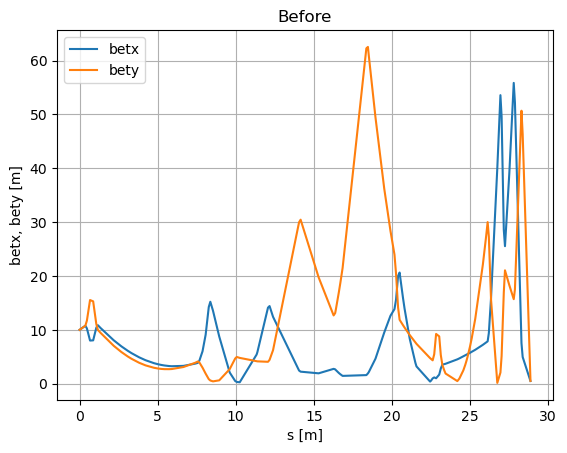

MAD-X Simulations#
This section is based on the BL2_Triplet_TDC_full (Beamline 2, transverse deflector cavity in operation) ATF example.
Hint: See the List of predefined simulations in Sirepo for examples of identifiers for different beamlines.
Setup and scan model before changing parameters#
[1]:
%run -i ../../../examples/prepare_flyer_env.py
import matplotlib.pyplot as plt
from sirepo_bluesky.sirepo_bluesky import SirepoBluesky
from sirepo_bluesky.madx_flyer import MADXFlyer
from sirepo_bluesky.sirepo_ophyd import create_classes
connection = SirepoBluesky("http://localhost:8000")
data, schema = connection.auth("madx", "00000002")
classes, objects = create_classes(connection.data,
connection=connection,
extra_model_fields=["rpnVariables", "commands"])
globals().update(**objects)
madx_flyer = MADXFlyer(connection=connection,
root_dir="/tmp/sirepo-bluesky-data",
report="elementAnimation250-20")
(uid1,) = RE(bp.fly([madx_flyer]))
hdr1 = db[uid1]
tbl1 = hdr1.table(stream_name="madx_flyer", fill=True)
print(tbl1)
No module named 'xraylib'
Transient Scan ID: 1 Time: 2023-06-07 19:37:07
Persistent Unique Scan ID: 'd4883b16-54d8-4365-a9fd-dd55492538ef'
New stream: 'madx_flyer'
/usr/share/miniconda3/envs/sirepo-bluesky-py3.9/lib/python3.9/site-packages/event_model/__init__.py:224: UserWarning: The document type 'bulk_events' has been deprecated in favor of 'event_page', whose structure is a transpose of 'bulk_events'.
warnings.warn(
time madx_flyer_NAME madx_flyer_S \
seq_num
1 2023-06-07 19:37:16.719336987 BEAMLINE_FULL$START 0.0
2 2023-06-07 19:37:16.719383717 HO00 0.2
3 2023-06-07 19:37:16.719410658 HPOP1 0.2
4 2023-06-07 19:37:16.719434023 HT1HV 0.2
5 2023-06-07 19:37:16.719455719 HO01 0.37
... ... ... ...
147 2023-06-07 19:37:16.722539186 IO20 28.28665
148 2023-06-07 19:37:16.722557545 IQ9 28.36265
149 2023-06-07 19:37:16.722601891 IO21 28.86265
150 2023-06-07 19:37:16.722633362 IP85 28.86265
151 2023-06-07 19:37:16.722671270 BEAMLINE_FULL$END 28.86265
madx_flyer_BETX madx_flyer_ALFX madx_flyer_BETY madx_flyer_ALFY \
seq_num
1 10.0 -1.0 10.0 -1.0
2 10.408 -1.04 10.408 -1.04
3 10.408 -1.04 10.408 -1.04
4 10.408 -1.04 10.408 -1.04
5 10.76738 -1.074 10.76738 -1.074
... ... ... ... ...
147 7.511737399 29.28116647 50.70010595 -49.81206671
148 4.955889215 6.950629231 46.35487045 102.4208395
149 0.4927675011 1.975614196 0.5139990441 -10.73909671
150 0.4927675011 1.975614196 0.5139990441 -10.73909671
151 0.4927675011 1.975614196 0.5139990441 -10.73909671
madx_flyer_DX madx_flyer_DY
seq_num
1 0.0 0.0
2 0.0 0.0
3 0.0 0.0
4 0.0 0.0
5 0.0 0.0
... ... ...
147 0.2928633271 0.0
148 0.2901702805 0.0
149 0.4938460783 0.0
150 0.4938460783 0.0
151 0.4938460783 0.0
[151 rows x 9 columns]
Scan again after changing parameters#
[2]:
def madx_plan(element=match8, parameter=ihq1, value=1.0):
yield from bps.mv(element.deltap, value)
yield from bps.mv(parameter.value, value)
return (yield from bp.fly([madx_flyer]))
(uid2,) = RE(madx_plan())
hdr2 = db[uid2]
tbl2 = hdr2.table(stream_name="madx_flyer", fill=True)
print(tbl2)
Transient Scan ID: 2 Time: 2023-06-07 19:37:17
Persistent Unique Scan ID: 'f21e4665-f058-4562-9dd3-e41fa6bf9046'
New stream: 'madx_flyer'
/usr/share/miniconda3/envs/sirepo-bluesky-py3.9/lib/python3.9/site-packages/event_model/__init__.py:224: UserWarning: The document type 'bulk_events' has been deprecated in favor of 'event_page', whose structure is a transpose of 'bulk_events'.
warnings.warn(
time madx_flyer_NAME madx_flyer_S \
seq_num
1 2023-06-07 19:37:22.564085960 BEAMLINE_FULL$START 0.0
2 2023-06-07 19:37:22.564133883 HO00 0.2
3 2023-06-07 19:37:22.564164877 HPOP1 0.2
4 2023-06-07 19:37:22.564189911 HT1HV 0.2
5 2023-06-07 19:37:22.564214468 HO01 0.37
... ... ... ...
147 2023-06-07 19:37:22.568079948 IO20 28.28665
148 2023-06-07 19:37:22.568099499 IQ9 28.36265
149 2023-06-07 19:37:22.568117857 IO21 28.86265
150 2023-06-07 19:37:22.568139791 IP85 28.86265
151 2023-06-07 19:37:22.568162918 BEAMLINE_FULL$END 28.86265
madx_flyer_BETX madx_flyer_ALFX madx_flyer_BETY madx_flyer_ALFY \
seq_num
1 10.0 -1.0 10.0 -1.0
2 10.408 -1.04 10.408 -1.04
3 10.408 -1.04 10.408 -1.04
4 10.408 -1.04 10.408 -1.04
5 10.76738 -1.074 10.76738 -1.074
... ... ... ... ...
147 1900.02317 -512.983326 939.0523192 -1904.117613
148 1994.298015 -730.7480304 1241.777577 -2068.588869
149 2791.986102 -864.6281425 4171.845384 -3791.546745
150 2791.986102 -864.6281425 4171.845384 -3791.546745
151 2791.986102 -864.6281425 4171.845384 -3791.546745
madx_flyer_DX madx_flyer_DY
seq_num
1 0.0 0.0
2 0.0 0.0
3 0.0 0.0
4 0.0 0.0
5 0.0 0.0
... ... ...
147 1.04657493 0.0
148 1.073606624 0.0
149 1.279162206 0.0
150 1.279162206 0.0
151 1.279162206 0.0
[151 rows x 9 columns]
Get the data via databroker API and plot#
[3]:
# Before changing parameters
s1 = tbl1["madx_flyer_S"]
betx1 = tbl1["madx_flyer_BETX"]
bety1 = tbl1["madx_flyer_BETY"]
plt.figure()
plt.plot(s1, betx1, label="betx")
plt.plot(s1, bety1, label="bety")
plt.xlabel("s [m]")
plt.ylabel("betx, bety [m]")
plt.title("Before")
plt.grid()
plt.legend()
[3]:
<matplotlib.legend.Legend at 0x7f76b265c340>

[4]:
# After changing parameters
s2 = tbl2["madx_flyer_S"]
betx2 = tbl2["madx_flyer_BETX"]
bety2 = tbl2["madx_flyer_BETY"]
plt.figure()
plt.plot(s2, betx2, label="betx")
plt.plot(s2, bety2, label="bety")
plt.xlabel("s [m]")
plt.ylabel("betx, bety [m]")
plt.title("After")
plt.grid()
plt.legend()
[4]:
<matplotlib.legend.Legend at 0x7f76b053f6a0>

Get the data from the raw TFS file and plot#
[5]:
import os
import tfs
for name, doc in hdr2.documents():
if name == "resource":
resource_doc = doc
print(resource_doc)
filename = os.path.join(resource_doc["root"], resource_doc["resource_path"])
df = tfs.read(filename)
Resource
========
path_semantics : posix
resource_kwargs :
resource_path : 2023/06/07/f1ff3f36-35b3-496f-8f61-ebeba43ec9c7.tfs
root : /tmp/sirepo-bluesky-data
run_start : f21e4665-f058-4562-9dd3-e41fa6bf9046
spec : madx
uid : f49e95e9-ba9f-4683-8a3e-3acfd95f1001
[6]:
df
[6]:
| NAME | S | BETX | ALFX | BETY | ALFY | DX | DY | |
|---|---|---|---|---|---|---|---|---|
| 0 | BEAMLINE_FULL$START | 0.00000 | 10.000000 | -1.000000 | 10.000000 | -1.000000 | 0.000000 | 0.0 |
| 1 | HO00 | 0.20000 | 10.408000 | -1.040000 | 10.408000 | -1.040000 | 0.000000 | 0.0 |
| 2 | HPOP1 | 0.20000 | 10.408000 | -1.040000 | 10.408000 | -1.040000 | 0.000000 | 0.0 |
| 3 | HT1HV | 0.20000 | 10.408000 | -1.040000 | 10.408000 | -1.040000 | 0.000000 | 0.0 |
| 4 | HO01 | 0.37000 | 10.767380 | -1.074000 | 10.767380 | -1.074000 | 0.000000 | 0.0 |
| ... | ... | ... | ... | ... | ... | ... | ... | ... |
| 146 | IO20 | 28.28665 | 1900.023170 | -512.983326 | 939.052319 | -1904.117613 | 1.046575 | 0.0 |
| 147 | IQ9 | 28.36265 | 1994.298015 | -730.748030 | 1241.777577 | -2068.588869 | 1.073607 | 0.0 |
| 148 | IO21 | 28.86265 | 2791.986102 | -864.628142 | 4171.845384 | -3791.546745 | 1.279162 | 0.0 |
| 149 | IP85 | 28.86265 | 2791.986102 | -864.628142 | 4171.845384 | -3791.546745 | 1.279162 | 0.0 |
| 150 | BEAMLINE_FULL$END | 28.86265 | 2791.986102 | -864.628142 | 4171.845384 | -3791.546745 | 1.279162 | 0.0 |
151 rows × 8 columns
[7]:
plt.figure()
plt.plot(df["S"], df["BETX"], label="betx")
plt.plot(df["S"], df["BETY"], label="bety")
plt.xlabel("s [m]")
plt.ylabel("betx, bety [m]")
plt.title("After")
plt.grid()
plt.legend()
[7]:
<matplotlib.legend.Legend at 0x7f76b0458fd0>